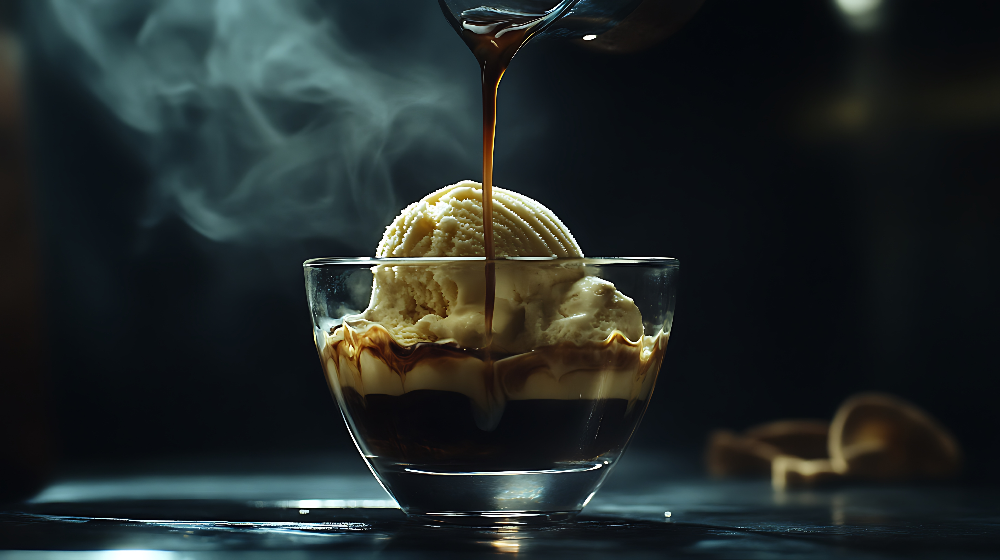

Affogato
Indulge in the simple elegance of Affogato, where a scoop of creamy vanilla gelato is "drowned" in a shot of rich, hot espresso, creating a delightful dance of contrasting temperatures and flavors.
This classic Italian dessert is a testament to the beauty of simplicity, a perfect ending to any meal or a luxurious afternoon treat. The interplay of the cold, velvety gelato and the warm, intense espresso creates a sensory experience that is both comforting and invigorating. With its minimal ingredients and effortless preparation, Affogato is a testament to the Italian philosophy of savoring life's simple pleasures.
Ingredients
- High-quality vanilla gelato (or your favorite flavor)
- Freshly brewed hot espresso (about 2 ounces per serving)
- Optional garnishes: chocolate shavings, biscotti, or a sprinkle of cocoa powder
Equipment
- Espresso machine or stovetop moka pot
- Ice cream scoop
- Small dessert bowls or glasses
- Measuring cup (for water in moka pot, if applicable)
Instructions
- Brew the Espresso: Prepare a strong, hot espresso using your preferred method. If using a moka pot, follow the manufacturer's instructions.
- Scoop the Gelato: Place one or two scoops of vanilla gelato into a dessert bowl or glass.
- Pour the Espresso: Immediately pour the hot espresso over the gelato.
- Serve Immediately: Serve the Affogato immediately, allowing the gelato to begin melting into the espresso.
- Garnish (Optional): If desired, garnish with chocolate shavings, a small biscotti, or a sprinkle of cocoa powder for added texture and flavor.